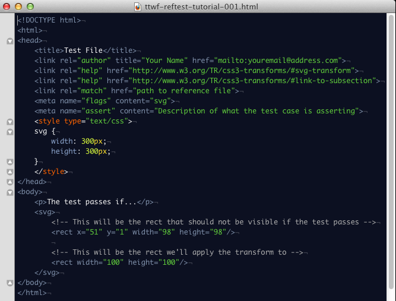
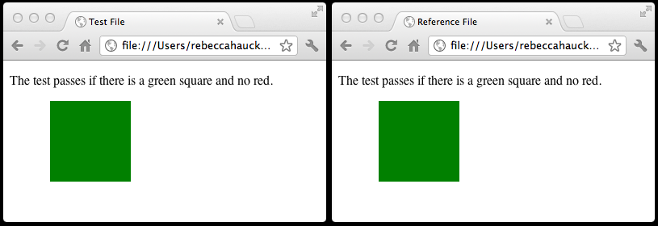
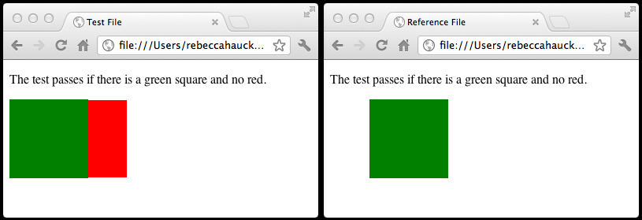
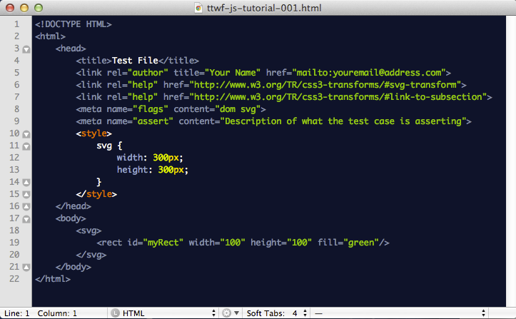
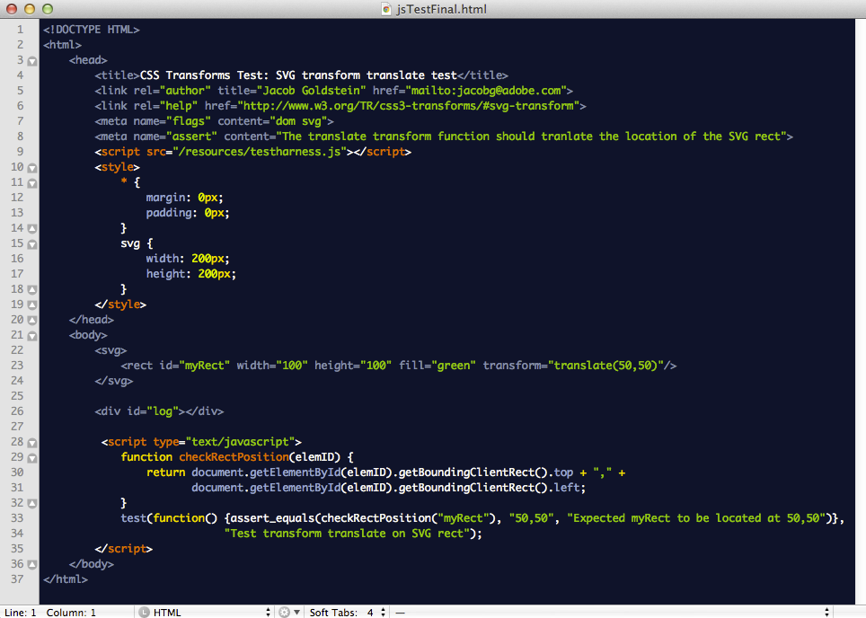
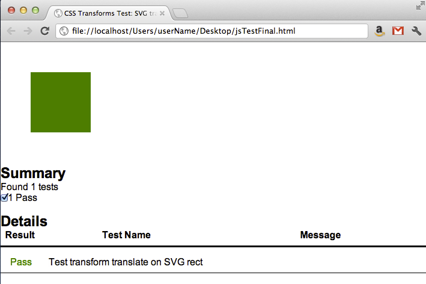
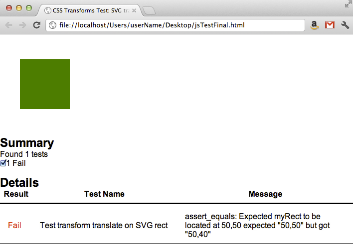

Test The Web Forward
Agenda
- Mercurial
- Ref Test Example
- JavaScript Test Example
- Q&A
W3C Reftest Tutorial
Sample Test Case
Write a basic test for the SVG transform attribute described in the CSS3 Transforms spec using the translate() function
Spec Links:
http://dev.w3.org/csswg/css3-transforms/#svg-transform
http://dev.w3.org/csswg/css3-transforms/#two-d-transform-functions
Step 1
Pull the starter files for this tutorial from Mercurial
OSX:
$ cd [...]/W3Cdir/test
$ hg pull -u
$ ls -lR contributors/adobe/ttwf
Note: These files can also be downloaded from here:
ttwf-reftest-tutorial.zip
Windows:
> cd [...]\W3Cdir\test
> hg pull -u
> dir contributors\adobe\ttwf
Step 2
Create a directory for your new test
OSX:
$ cd [...]/W3Cdir/test/contributors/adobe/ttwf/
$ mkdir -p yourName/incoming
Windows:
> cd [...]\W3Cdir\test\contributors\adobe\ttwf
> mkdir yourName\incoming
Step 3
Copy the starter files to your incoming directory
OSX:
$ cd [...]/W3Cdir/test/contributors/adobe/ttwf/yourName/incoming
$ cp -R [...]/W3Cdir/test/contributors/adobe/ttwf/* .
Windows:
> cd [...]\W3Cdir\test\contributors\adobe\ttwf\yourName\incoming
> copy ..\..\* .
> mkdir reftest
> cd reftest
> copy ..\..\..\reftest\* .
Step 4
Open the test file in an editor
Step 5
Add the test metadata
- Title
- Author
- Spec link(s)
- Reference file path
- Flags
- Assertion
Step 6
Add the transform attribute and test function to the SVG element
<body>
<svg>
<rect width="100" height="100" transform="translate(50)"/>
</svg>
</body>
Step 7
Create an element that is visible only upon failure
<body>
<svg>
<rect x="51" y="1" width="98" height="98"/>
<rect width="100" height="100" transform="translate(50)"/>
</svg>
</body>
Step 8
Add green & red fill colors to denote passing & failing conditions
<body>
<svg>
<rect width=x="51" y="1" width="98" height="98" fill="red"/>
<rect width="100" height="100" transform="translate(50)" fill="green"/>
</svg>
</body>
Step 9
Add a statement to the test page to make this a self-describing test
<body>
<p>The test passes if there is a green square and no red.</p>
<svg>
<rect x="51" y="1" width="98" height="98" fill="red"/>
<rect width="100" height="100" transform="translate(50)" fill="green"/>
</svg>
</body>
Step 10
Open the reference file in an editor

Step 10
Add the reference metadata
- Title
- Author
- Flags
Step 11
Create and position the reference element so it matches the test file exactly in a passing condition
<body>
<svg>
<rect x="50" y="0" width="100" height="100" fill="green"/>
</svg>
</body>
Step 12
Add the self-describing statement here, too
<body>
<p>The test passes if there is a green square and no red.</p>
<svg>
<rect x="50" y="0" width="100" height="100" fill="green"/>
</svg>
</body>
Step 13
Examine your test and reference files in the browser and confirm they are identical
Failing test example

Step 14
Add your new test & reference file to the repository
OSX:
$ cd [...]/W3Cdir/test/contributors/adobe/ttwf/yourName/incoming
$ hg add
$ hg commit -m "TTWF reftest tutorial"
$ hg push
Windows:
> cd [...]\W3Cdir\test\contributors\adobe\ttwf\yourName\incoming
> hg add
> hg commit -m "TTWF reftest tutorial"
> hg push
Step 15
Ask someone to review your test
Step 16
Incorporate feedback & move test to the submitted folder
$ cd ~/W3Cdir/test/contributors/yourName
$ hg pull -u
$ hg merge
$ hg commit -m "merging"
$ hg mv incoming/ttwf-reftest-tutorial-001.html submitted/ttwf-reftest-tutorial-001.html
$ hg mv incoming/reftest/ttwf-reftest-tutorial-ref.html submitted/reftest/ttwf-reftest-tutorial-ref.html
$ hg commit -m "moved the TTWF reftest tutorial to the submitted folder"
$ hg push
JavaScript Test Overview
- In most cases, JavaScript is the preferred method for writing tests
- JavaScript tests have some advantages over Ref Tests
- Robust
- Flexible
- Performant
- Powerful
- W3C provides a framework (testharness) to simplify and standardize test creation
- Includes an API for making common test assertions
- Formats results and displays debug information for failures
- JavaScript tests are best when used in conjunction with some number of Ref Tests that verify final rendering
W3C JavaScript Tutorial
Sample Test Case
Write a basic test for the SVG transform attribute described in the CSS3 Transforms spec using the translate() function
Same as Ref Test example
Spec Links:
http://dev.w3.org/csswg/css3-transforms/#svg-transform
http://dev.w3.org/csswg/css3-transforms/#two-d-transform-functions
Step 1
Did you clone the resources directory?
$ ls /resources
... testharness.css testharness.js testharnessreport.js
If not, clone the resources directory now:
$ cd /
$ sudo hg clone https://dvcs.w3.org/hg/resources/
Step 2
JavaScript starter file was copied during Mercurial setup
Open the test file in an editor
Step 3
Add the test metadata
- Title
- Author
Step 4
Import the W3C JavaScript Test Harness files
<meta name="assert" content="TEST ASSERTION">
<script src="/resources/testharness.js"></script>
<script src="/resources/testharnessreport.js">></script>
<style>
...
</style>
Step 5
Add element with id="log" for test results
<body>
...
<div id="log"></div>
</body>
testharness will add a HTML table that contains test results to this element
Step 6
Add the test function to the SVG element
Same as step 6 from RefTest section
<body>
<svg>
<rect width="100" height="100" transform="translate(50,50)"/>
</svg>
</body>
Step 7
Set margins and padding to 0px
<style>
* {
margin: 0px;
padding: 0px;
}
</style>
This is not required, but simplifies the code
Step 8
Create a script block that will contain the JavaScript
<body>
<svg>
<rect width="100" height="100" transform="translate(50,50)"/>
</svg>
<div id="log"></div>
<script>
</script>
</body>
Step 9
Create a function that will return the x,y position of an element
<script>
function checkElementPosition(elemID) {
return document.getElementById(elemID).getBoundingClientRect().top +
"," + document.getElementById(elemID).getBoundingClientRect().left;
}
</script>
Step 10
Use test function from testharness.js
test(function, description)
<script>
...
test(function() {}, "Enter test description here")
</script>
Each call to test() is a unique test case
Pass/Fail is based on return value of function
Description is displayed in test results table
Step 11
Use assert_equals to check position of SVG Rect
assert_equals(actual, expected, description)
NOTE: description is only displayed if assertion failed
Additional functions documented in comment section of testharness.js
assert_equals(checkElementPosition("myRect"), "50,50",
"myRect should be at 50,50")
actual = assert_equals(checkElementPosition("myRect")
expected = "50,50"
description = "myRect should be at 50,50"
Step 12
Call assert_equals function, inline, from test function
test(function, description)
test(function() {assert_equals(checkElementPosition("myRect"), "50,50",
"myRect should be at 50,50")}, "Test transform translate on SVG rect");
Final file
Passing test example

Failing test example

Step 13
Ask someone to review your test
Step 14
Add your new test file to the repository
$ cd ~/W3Cdir/test/contributors/yourName
$ hg add
$ hg commit -m "TTWF JavaScript tutorial"
$ hg push